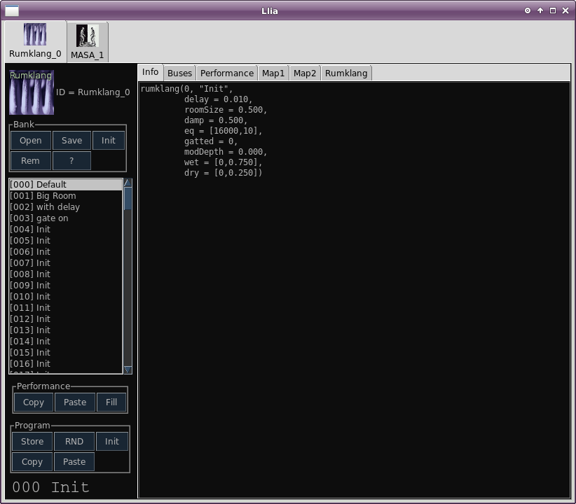
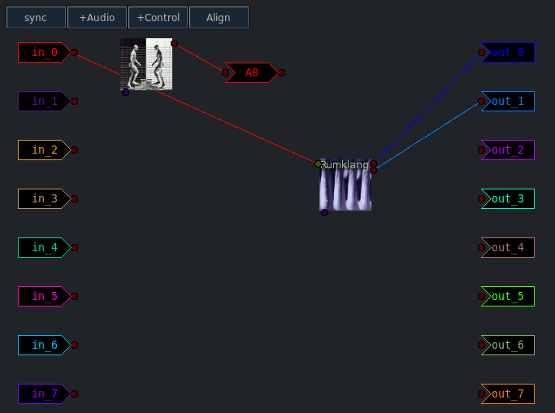

Llia Effects (part 1)
Previous( Quick Start 2 ) Next( Effects 2 ) Home Contents Synth Catalog
Effects
An effect is a special type of synth for processing audio signals. The input may come from another synth or from an external source via the sound card.
To use an effect a synth's output is patched to the effects input. This patching is not done directly, instead an audio bus is used to connect the two synths together.
You may assign buses when a synth is created but it is more intuitive to use the "graph" window which graphically displays the interconnection between synths and buses.
For illustration we'll patch the MASA organ through the Rumklang reverb. Start with a clean slate by stopping and restarting both the LLia client and SuperCollider.
- From the main window select the "Effects" tab.

- Select the Rumklang effect.
-
When the Rumklang add-synth dialog appears, accept the defaults
and click "OK".
As before the dialog is replaced with a new synth group window. - Go back to the main window and select the "Synths" tab.

- Now add the MASA organ, select Poly1 keymode and click OK.
The synth group window should look something like this:
At this point MASA should be active but it has not yet been patched through the reverb.
- Select the "graph" tab from the main application window.
The graph shows several things, First though, when items are initially placed on the graph they are at random locations. Click and drag the icons around as you please.
There are two synth icons, one for MASA and one for Rumklang. MASA is connected to something called out_0, Rumklang is connected to out_0, out_1 and in_0. These things the synths are connected to are audio buses, but these are special buses related to hardware input and output.
The column of buses on the right are hardware outputs. Buses out_0 and out_1 corresponds to the primary Left and Right outputs of the first sound card. The remaining buses corresponds to additional outputs or to additional sound cards. If the system does not have additional outputs, these buses are not connected to anything.
Likewise the left column are hardware inputs. Buses in_0 and in_1 are the left and right inputs of the primary sound card. Additional inputs or sound cards, if any, are connected to the remaining buses.
In order to process MASA through the reverb a new, general, audio bus must be created.
- Click +Audio and a new bus appears at some random location.
 Dragging things around a bit gets this:
Dragging things around a bit gets this:

Look closely at the MASA icon and find the small circle near the top on the right hand side. This is the main output for the synth. MASA only has a single output, others synths may have several. Whenever you move the mouse into one of these circles, all of the places to which it may connect are highlighted.

- Drag a line between the output of MASA to the input (left side) of audio bus A0.

When you release the mouse the connection between MASA and A0 is made, and the previous connection between MASA and out_0 is severed. A synth output may only connect to a single bus. A bus however may be connected to any number of synths.
At this point there is no path between MASA and the sound card.
- In a similar manner connect the right side of bus A0 to the input (left) side of Rumklang.

And Whala, a reverberated organ
See the graph pages for more details.
Previous( Quick Start 2 ) Next( Effects 2 ) Home Contents Synth Catalog